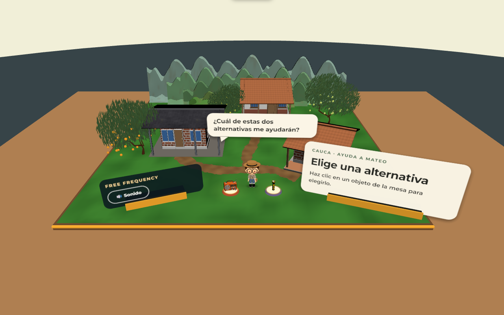
Diseño Interactivo · UAO · tercer corte
Cuando la señal se apaga, la comunicación no. Realidad aumentada para Meta Quest 3: Mateo, una radio y una linterna sobre tu mesa.
Guía de entrega · tercer corte
| Elemento | Peso | Estado | Lo principal que falta |
|---|---|---|---|
| 01 · Interacciones creativas con las manos | 15 % | Hecho | Bocetos sobre capturas del visor |
| 02 · Problema y proceso de desarrollo | 15 % | Hecho | Fotos del equipo en tercera persona |
| 03 · Adaptación del proyecto a RA | 10 % | Hecho | Boceto de color sobre la mesa real |
| 04 · RA frente a RV | 10 % | Parcial | Diapositiva del continuo y escaneo |
| 05 · Sistemas de IWSDK | 15 % | Hecho | Un clip en el visor por sistema |
| 06 · Optimización para Meta Quest 3 | 10 % | Falta evidencia | FPS en el visor y un antes y después |
| 07 · Análisis de confort | 10 % | Parcial | Pruebas con personas externas |
| 08 · Calidad de assets y producto | 15 % | Parcial | Blender, licencias y Drive |
Free Frequency · Entrega final
E01 · Interacciones creativas con las manos · 15 %
| Gesto | Acción | Respuesta visual y sonora | Por qué |
|---|---|---|---|
| Tocar el objeto con el índice (2,2 cm) | Elegir radio o linterna | El objeto salta, el otro desaparece · clic | Señalar es escoger |
| Cerrar la mano sobre el objeto | Agarrarlo | Crece a tamaño real en 0,11 s · clic | Agarrar como algo físico |
| Mano izquierda de lado, pulgar delante (propia) | Sostener la radio | La radio queda contra la palma y sigue la muñeca | Así se sostiene una radio portátil |
| Pulgar e índice en la perilla, girar (propia) | Encender y sintonizar | La perilla gira con los dedos, la aguja se mueve · estática y emisoras | El mismo gesto de una radio real |
| Puño cerrado y doblar el pulgar (propia) | Destellos y SOS en Morse | Haz de luz e indicadores · golpe al hundir, clic al soltar | El pulgar sobre el interruptor |
Free Frequency · Entrega final
E01 · Interacciones creativas con las manos
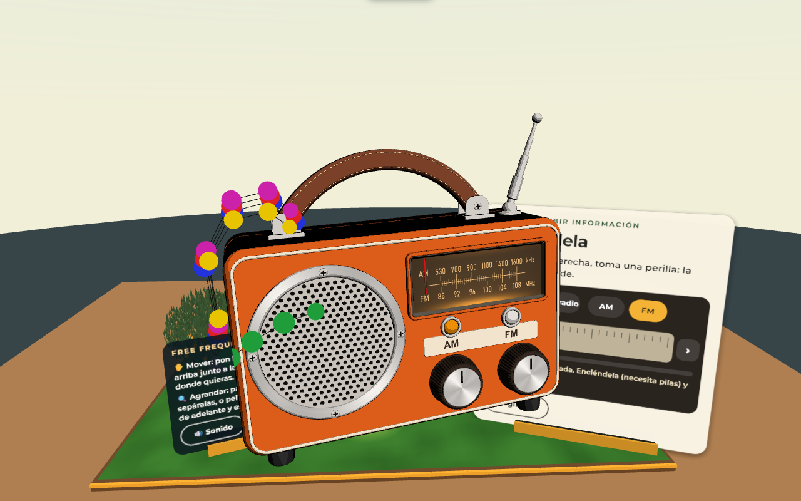
Radio contra la palma, pulgar delante
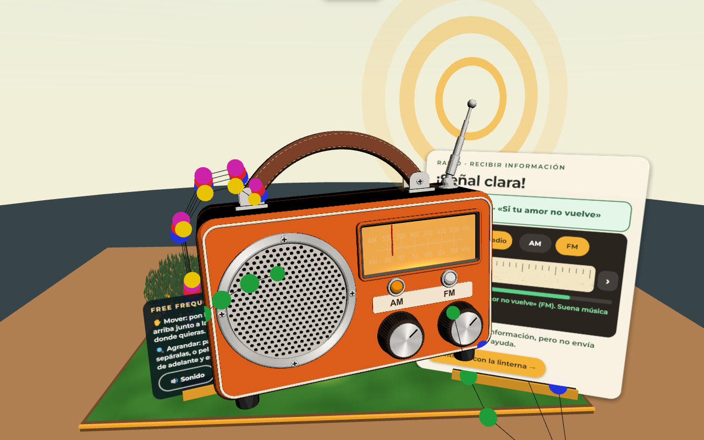
La derecha gira la perilla
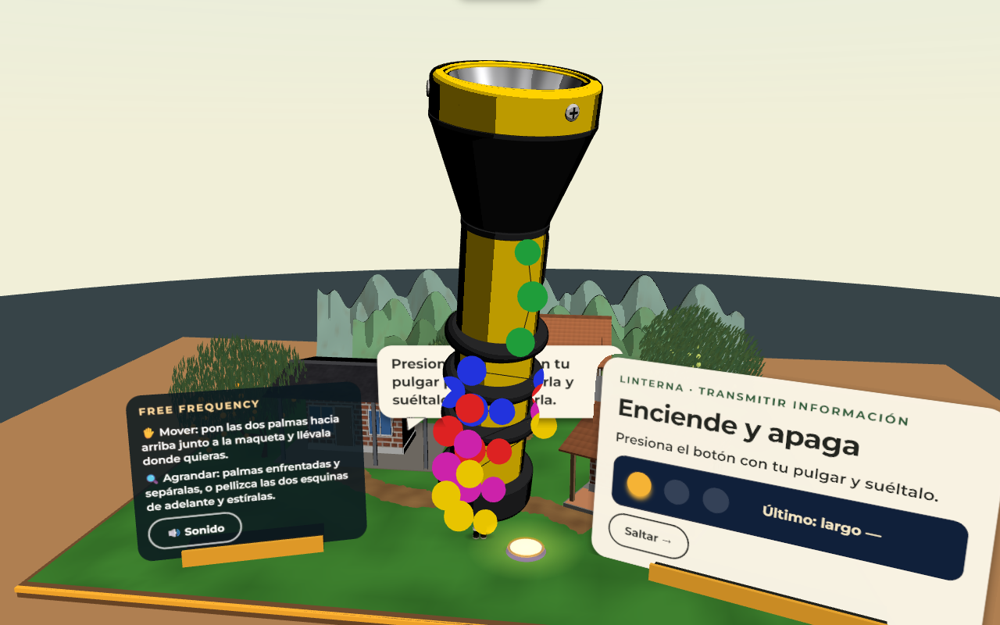
Doblar el pulgar enciende la luz
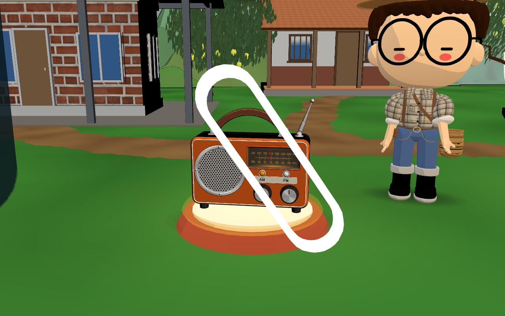
Manos solo con contorno blanco
Si se pierde el seguimiento, la radio y la linterna se quedan quietas donde estaban (0 mm en la prueba) y vuelven a la mano en 0,35 s: no salen disparadas ni desaparecen.
Free Frequency · Entrega final
E02 · Problema y proceso de desarrollo · 15 %
V1
Colocar en una mesa real. Escaneo con planos y hit-test; pellizcar para colocar; botones con el índice.
V5
Emisoras cortadas a 12 s. Duración por emisora: noticia de 16 s e historia completa de 3 min 13 s.
V2
Maqueta fija y lejos. Moverla con las palmas hacia arriba y agrandarla con las palmas enfrentadas.
V6
La mano real se cierra más que el objeto. Modelos nuevos, radio contra la palma y linterna al centro del puño.
V3
Tarjetas fuera de la maqueta. Tarjetas a 4 cm de los objetos, objetos 2,5 veces más grandes y tres globos de Mateo.
V7
Personajes con esqueleto. El giro de cada articulación pasa a su hueso; Mateo conserva sus gestos.
V4
La radio colgaba de la manija. Agarre lateral con las 25 articulaciones XRHand y filtro adaptativo.
V8
Máscara en las manos y linterna difícil. Solo contorno blanco, encender doblando el pulgar y botón «Finalizar».
Herramientas: VS Code, emulador IWER de IWSDK (npm run dev), Blender y capturas del visor.
Free Frequency · Entrega final
E02 · Problema y proceso de desarrollo
Antes · tarjeta lejos
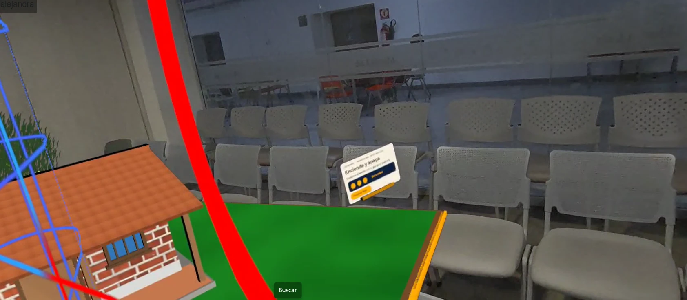
Después · cerca
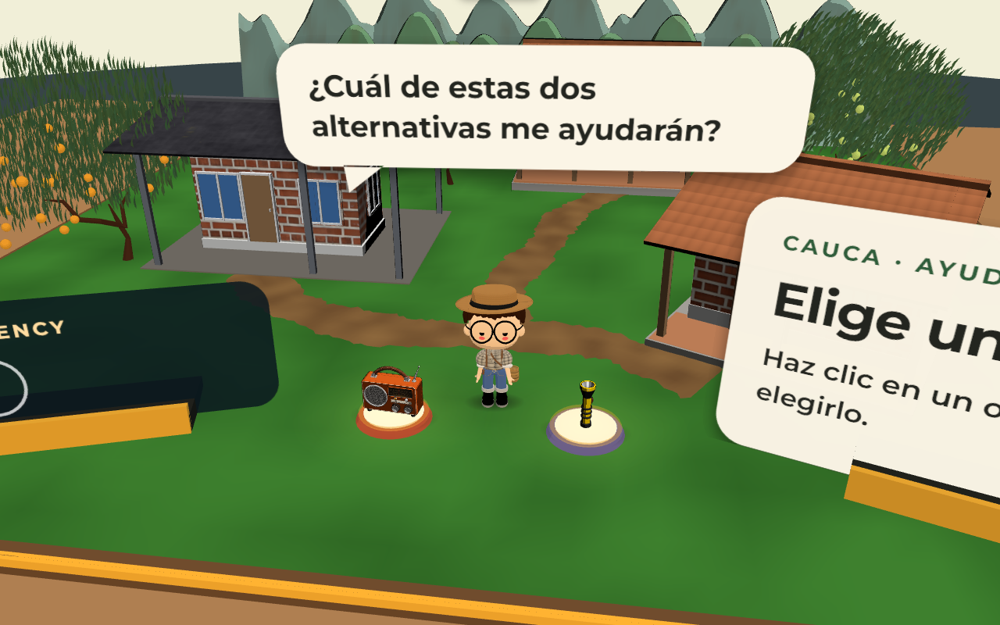
Antes · radio al lado
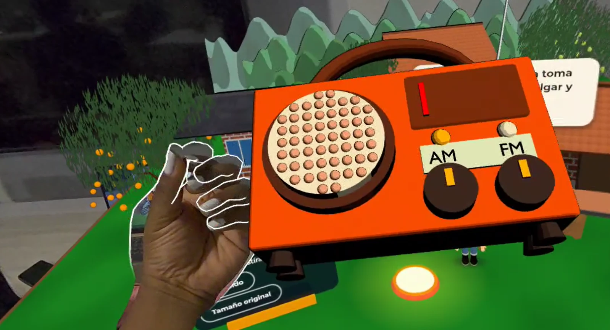
Después · en la palma
Antes · sobre los dedos
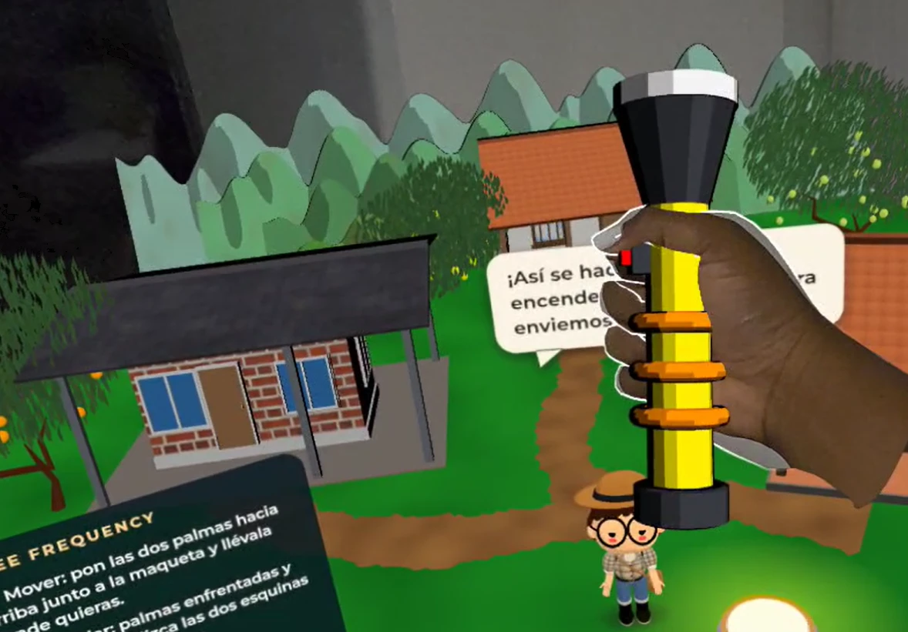
Después · en el puño
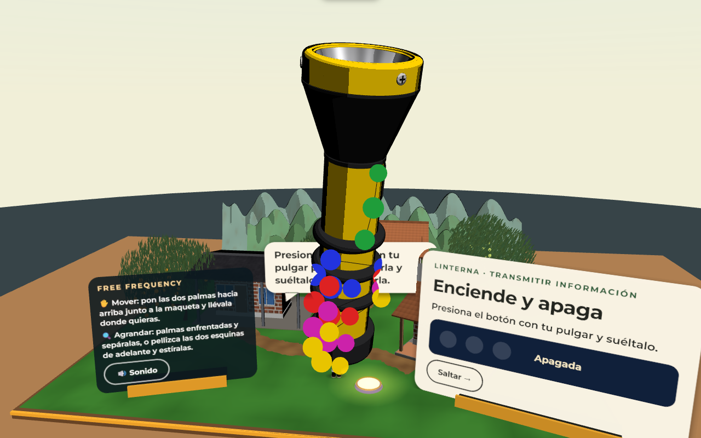
Antes · máscara
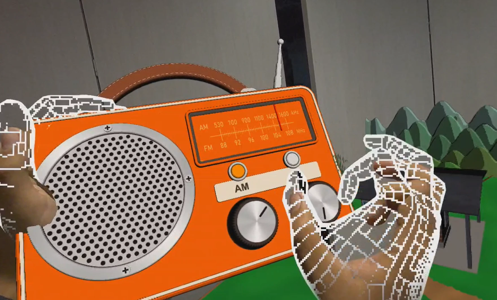
Después · contorno
Free Frequency · Entrega final
E02 · Insumos del proceso
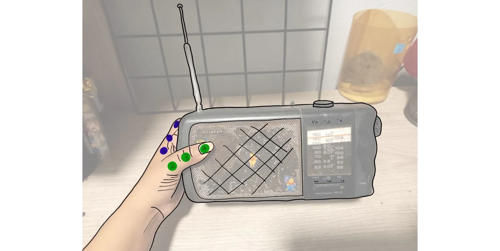
Boceto: agarre de la radio
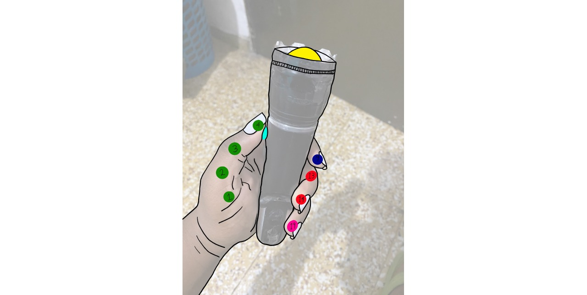
Boceto: agarre de la linterna
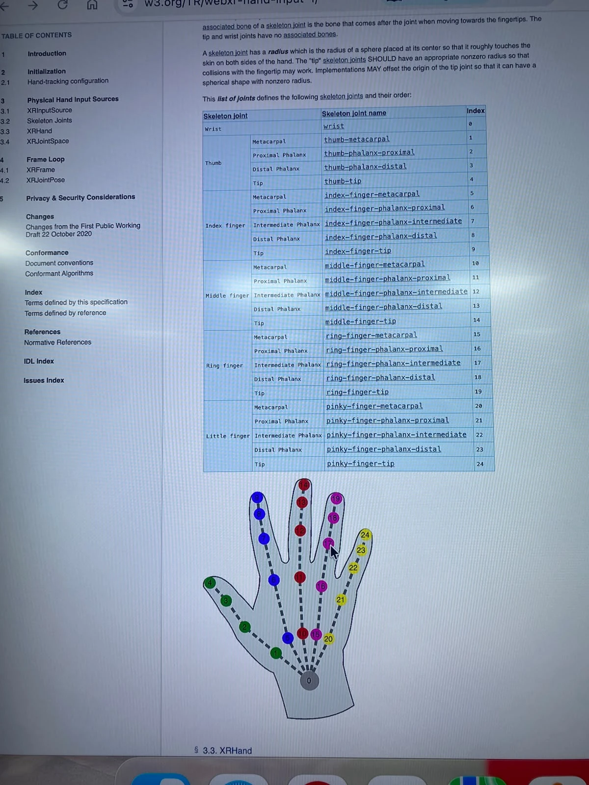
Las 25 articulaciones XRHand (W3C)
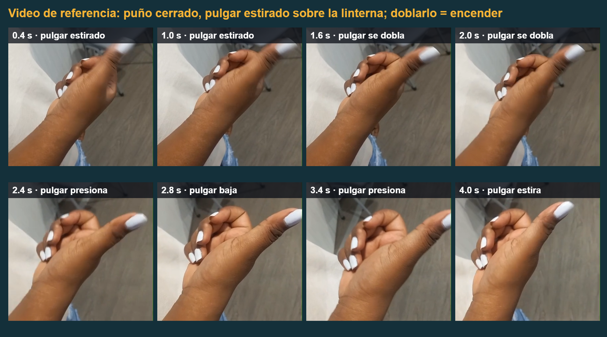
Video: el pulgar se dobla para encender
Los puntos numerados de los bocetos siguen los índices de XRHand: 0 muñeca, 1-4 pulgar, 5-9 índice, 10-14 medio, 15-19 anular y 20-24 meñique.
Free Frequency · Entrega final
E03 · Adaptación del proyecto a RA · 10 %
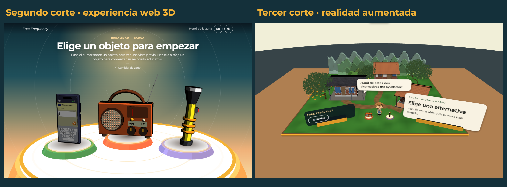
Segundo corte (web) frente al tercero (maqueta sobre la mesa)
Escenario en pantalla → maqueta de 71 × 73 cm sobre la mesa escaneada.
Clic del ratón → tocar con el índice y agarrar a tamaño real (radio 24 cm, linterna 19 cm).
Se quitó el teléfono y la zona urbana; se agregó mover y agrandar la maqueta.
Superficie: una mesa horizontal; huella de unos 120 × 92 cm.
Free Frequency · Entrega final
E04 · RA frente a RV · 10 %
| Concepto | Dónde aparece en Free Frequency |
|---|---|
| Continuo | Cerca del extremo real: solo la maqueta y los objetos son virtuales |
| RA fuerte | Registrada a la mesa real y a las manos reales |
| Aumento y mediación | Passthrough de video del Quest 3 |
| Seguimiento y registro | Cabeza 6 DoF, manos con 25 articulaciones, local-floor |
| Detección de planos | Cuadrícula amarilla en mesas y azul en el piso |
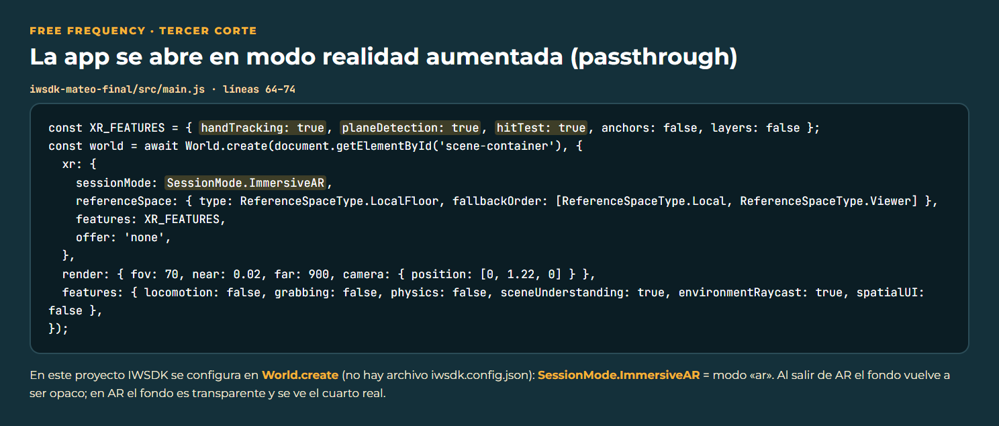
SessionMode.ImmersiveAR en src/main.js
En RV no habría mesa real: haría falta un entorno completo y se perdería la referencia del propio espacio.
Free Frequency · Entrega final
E05 · Sistemas de IWSDK · 15 %
| Sistema | Uso | Para qué | Archivo |
|---|---|---|---|
| Scene Understanding | Sí | Detecta la mesa y dibuja la cuadrícula del escaneo | src/main.js |
| Environment Raycast | Sí | Anillo amarillo sobre cualquier superficie | src/main.js |
| Built-in Interactions | Sí | Pellizco a distancia y toque con el índice | src/shim.js |
| Hand tracking | Sí | 25 articulaciones para elegir, agarrar y encender | public/ff/app.js |
| Grabbing | No | Agarre propio: pulgar en el frente y en el botón | public/ff/app.js |
| Physics (Havok) | No | Nada cae ni rebota | — |
| Spatial UI (UIKitML) | No | Tarjetas en canvas con Montserrat, tildes y «¡» | public/ff/ui.js |
| Depth Occlusion | No | Las manos se ven solo como contorno | src/main.js |
| Camera Access | No | No hace falta leer la cámara | — |
Free Frequency · Entrega final
E06 · Optimización para Meta Quest 3 · 10 %
| Asset | Triángulos | Peso | Texturas | Formato |
|---|---|---|---|---|
| Radio.glb | 49 743 | 1,52 MB | 512 × 512, 560 × 256 | GLB + PNG |
| Linterna.glb | 27 832 | 0,68 MB | 512 × 512 | GLB + PNG |
| Mateo (chico.glb) | 119 786 | 5,22 MB | 14 × 1024 × 1024 | GLB + JPG |
| Valeria (solo portada) | 95 328 | 3,86 MB | 9 × 1024 × 1024 | GLB + JPG |
| Escenario del Cauca | 173 090 | 7,02 MB | 1024 y 256 px | GLB + JPG/PNG |
| Canción de la radio | — | 11,14 MB | — | MP3 |
| Historia de terror | — | 2,95 MB | — | MP3 |
Peso de dist (npm run build): 57 MB, de los cuales 28 MB son modelos y audios y 13,6 MB son JavaScript.
Free Frequency · Entrega final
E06 · Optimización para Meta Quest 3
57 MB
peso de dist
297
llamadas de dibujo por ojo
376 245
triángulos por ojo
≈ 9 MB
que esta versión no usa
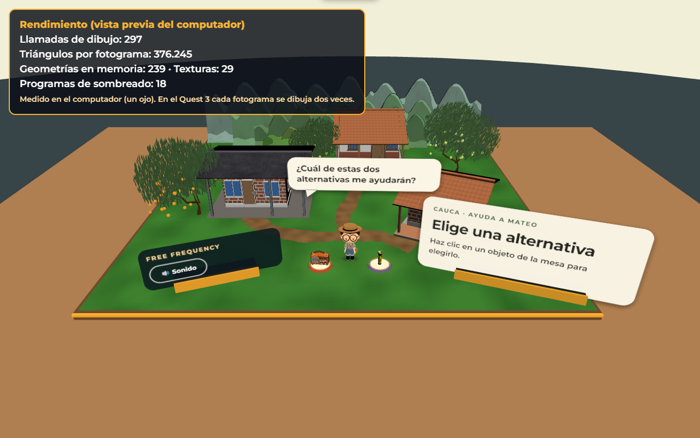
Medido en el computador, un ojo
Quitar de dist los personajes anteriores (4,0 MB), las locuciones .wav reemplazadas (3,2 MB) y Havok (2,0 MB).
Recortar la canción a los fragmentos que suenan (hoy 11,1 MB).
Bajar triángulos de Mateo y del escenario en Blender y pasar texturas a KTX 2.0.
Free Frequency · Entrega final
E07 · Análisis de confort · 10 %
| Decisión | Valor | Razón |
|---|---|---|
| Tarjetas junto a los objetos | 4 cm, giradas 20° | Se leen sin girar la cabeza |
| Ancho de las tarjetas | 30 y 20 cm, fijo | El texto no crece ni se aleja |
| Alto de los botones | ≈ 31 mm | Mayor que 22 mm |
| Separación de botones | ≈ 7 mm | Subir a 12 mm |
| Toque de botones | 5 cm resalta, 1,2 cm pulsa | Un toque, un clic |
| Globos de Mateo | 5 s y 7 s | Tiempo de lectura |
| Soltar la radio | Mano extendida 0,5 s | No se suelta sin querer |
Todo a la altura de la mesa: brazos cerca del cuerpo
Free Frequency · Entrega final
E08 · Calidad de assets y del producto · 15 %
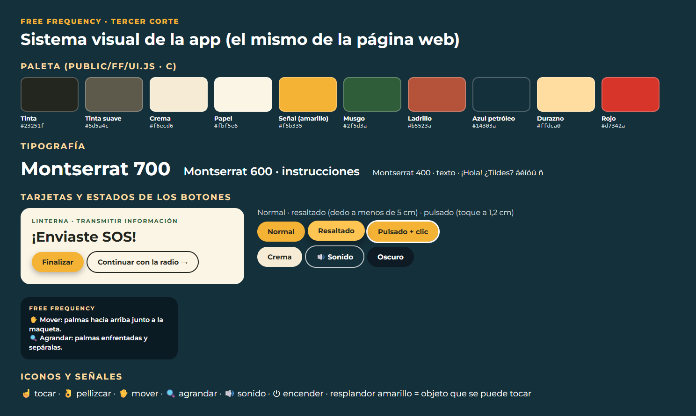
Paleta, Montserrat, estados de los botones e iconos
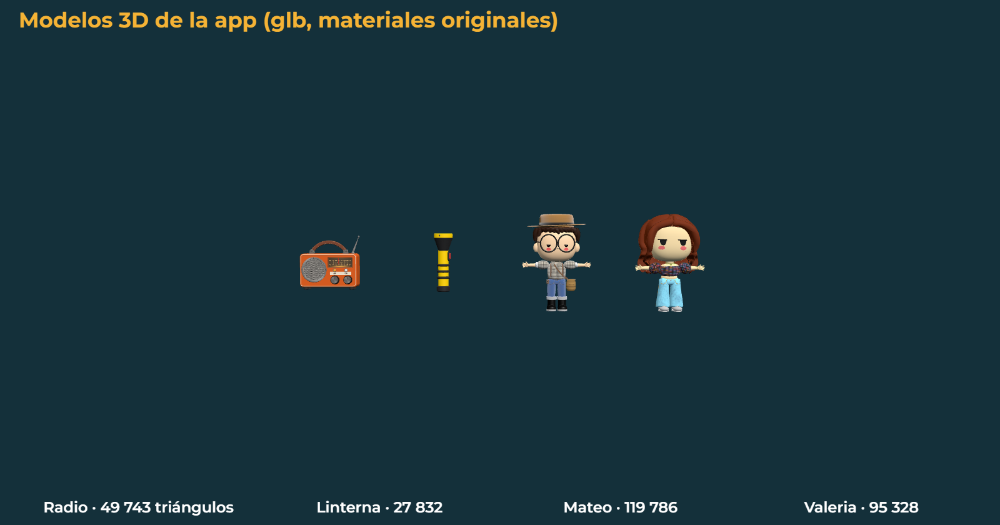
Modelos 3D propios con sus materiales originales
Las tarjetas usan la misma tipografía y los mismos colores de la página web, con tildes y «¡» completos.
Free Frequency · Entrega final
E08 · Calidad de assets y del producto
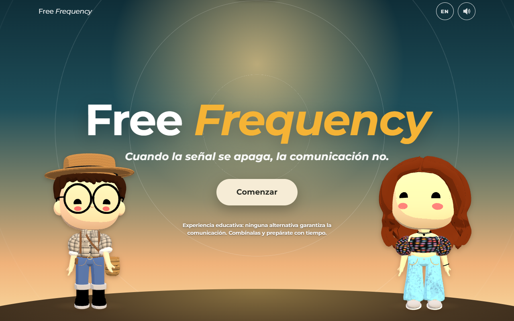
1 · Portada y «Comenzar»
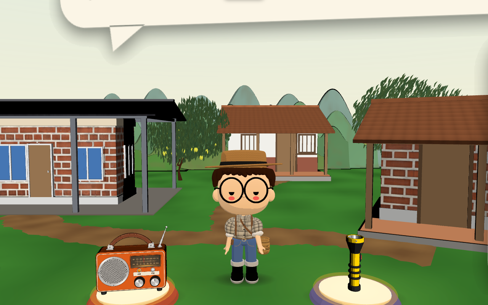
2 · Mateo pide ayuda
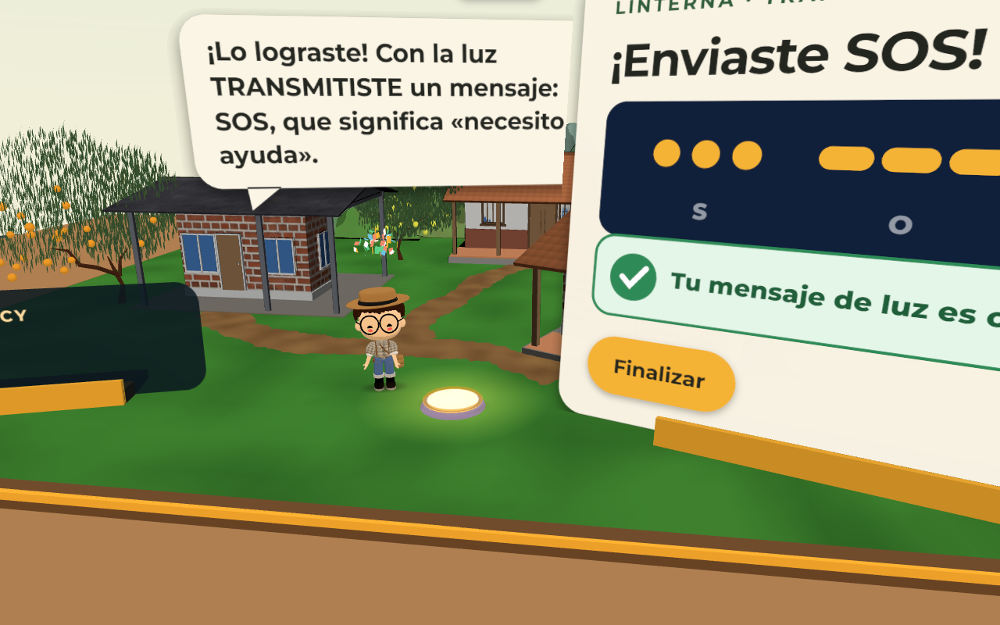
3 · Práctica y «Finalizar»
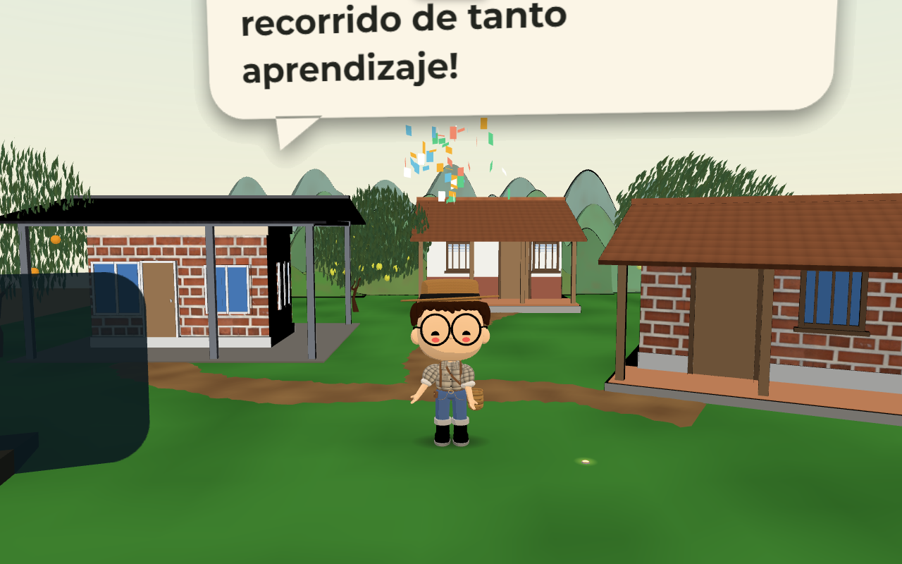
4 · Mateo agradece
| Asset | Origen | Licencia |
|---|---|---|
| Radio, linterna, personajes y escenario | Modelos del grupo | Propios: indicar autores |
| IWSDK y Three.js | Meta y comunidad | MIT |
| «Si tu amor no vuelve» | Grabación comercial | Con derechos: pedir permiso |
Free Frequency · Entrega final
Antes de entregar
E01 · Bocetos sobre capturas del visor y demo de cada interacción.
E06 · FPS medidos en el visor y un antes y después con cifras.
E02 · Fotos del equipo en tercera persona y cómo se repartió el trabajo.
E06 · Tiempo de carga desde la URL de GitHub Pages.
E03 · Boceto con código de color sobre una foto de la mesa real.
E07 · Pruebas con personas externas y foto de postura.
E04 · Diapositiva del continuo y captura del escaneo en el visor.
E08 · Capturas en Blender, licencia de la canción y archivos en Drive.
E05 · Un clip en el visor por cada sistema usado.
Todo · Revisar ortografía: −0,1 por cada error.
Free Frequency · Entrega final